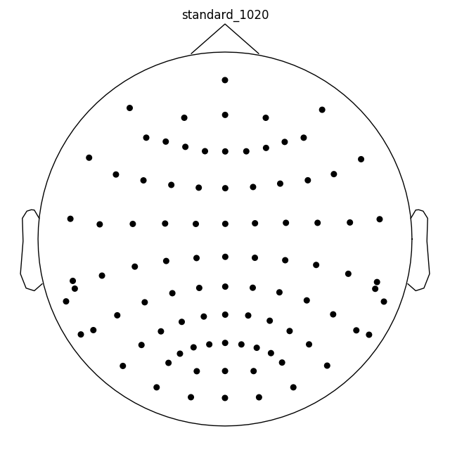
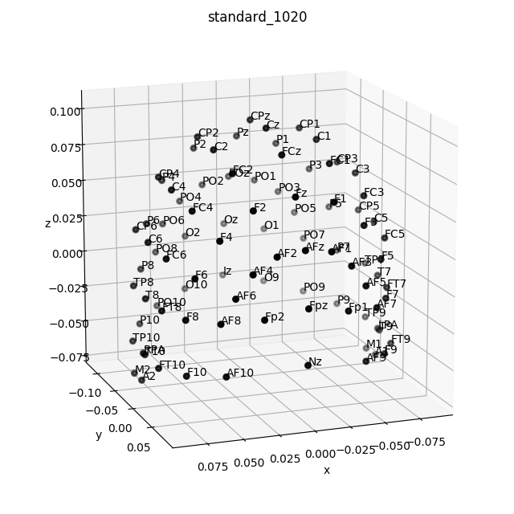

Note
Click here to download the full example code
Working with sensor locations¶
This tutorial describes how to plot sensor locations, and how the physical location of sensors is handled in MNE-Python.
Page contents
As usual we’ll start by importing the modules we need and loading some example data:
import os
import numpy as np
import matplotlib.pyplot as plt
from mpl_toolkits.mplot3d import Axes3D # noqa
import mne
sample_data_folder = mne.datasets.sample.data_path()
sample_data_raw_file = os.path.join(sample_data_folder, 'MEG', 'sample',
'sample_audvis_raw.fif')
raw = mne.io.read_raw_fif(sample_data_raw_file, preload=True, verbose=False)
About montages and layouts¶
MNE-Python comes pre-loaded with information about the sensor positions of
many MEG and EEG systems. This information is stored in layout files and
montages. Layouts give sensor positions in 2
dimensions (defined by x, y, width, and height values for
each sensor), and are primarily used for illustrative purposes (i.e., making
diagrams of approximate sensor positions in top-down diagrams of the head).
In contrast, montages give sensor positions
in 3D (x, y, z, in meters). Many layout and montage files are
included during MNE-Python installation, and are stored in your
mne-python directory, in the mne/channels/data/layouts and
mne/channels/data/montages folders, respectively:
data_dir = os.path.join(os.path.dirname(mne.__file__), 'channels', 'data')
for subfolder in ['layouts', 'montages']:
print('\nBUILT-IN {} FILES'.format(subfolder[:-1].upper()))
print('======================')
print(sorted(os.listdir(os.path.join(data_dir, subfolder))))
Out:
BUILT-IN LAYOUT FILES
======================
['CTF-275.lout', 'CTF151.lay', 'CTF275.lay', 'EEG1005.lay', 'EGI256.lout', 'KIT-157.lout', 'KIT-160.lay', 'KIT-AD.lout', 'KIT-AS-2008.lout', 'KIT-UMD-3.lout', 'Neuromag_122.lout', 'Vectorview-all.lout', 'Vectorview-grad.lout', 'Vectorview-grad_norm.lout', 'Vectorview-mag.lout', 'biosemi.lay', 'magnesWH3600.lout']
BUILT-IN MONTAGE FILES
======================
['EGI_256.csd', 'GSN-HydroCel-128.sfp', 'GSN-HydroCel-129.sfp', 'GSN-HydroCel-256.sfp', 'GSN-HydroCel-257.sfp', 'GSN-HydroCel-32.sfp', 'GSN-HydroCel-64_1.0.sfp', 'GSN-HydroCel-65_1.0.sfp', 'biosemi128.txt', 'biosemi16.txt', 'biosemi160.txt', 'biosemi256.txt', 'biosemi32.txt', 'biosemi64.txt', 'easycap-M1.txt', 'easycap-M10.txt', 'mgh60.elc', 'mgh70.elc', 'standard_1005.elc', 'standard_1020.elc', 'standard_alphabetic.elc', 'standard_postfixed.elc', 'standard_prefixed.elc', 'standard_primed.elc']
As you may be able to tell from the filenames shown above, the included
montage files are all for EEG systems. These are idealized sensor positions
based on a spherical head model. Montage files for MEG systems are not
provided because the 3D coordinates of MEG sensors are included in the raw
recordings from MEG systems, and are automatically stored in the info
attribute of the Raw file upon loading. In contrast, layout
files are included for MEG systems (to facilitate easy plotting of MEG
sensor location diagrams).
You may also have noticed that the file formats and filename extensions of layout and montage files vary considerably. This reflects different manufacturers’ conventions; to simplify this, the montage and layout loading functions in MNE-Python take the filename without its extension so you don’t have to keep track of which file format is used by which manufacturer. Examples of this can be seen in the following sections.
If you have digitized the locations of EEG sensors on the scalp during your
recording session (e.g., with a Polhemous Fastrak digitizer), these can be
loaded in MNE-Python as DigMontage objects; see
Reading sensor digitization files (below).
Working with layout files¶
To load a layout file, use the mne.channels.read_layout()
function, and provide the filename without its file extension. You can then
visualize the layout using its plot() method, or
(equivalently) by passing it to mne.viz.plot_layout():
biosemi_layout = mne.channels.read_layout('biosemi')
biosemi_layout.plot() # same result as: mne.viz.plot_layout(biosemi_layout)
Similar to the picks argument for selecting channels from
Raw objects, the plot() method of
Layout objects also has a picks argument. However,
because layouts only contain information about sensor name and location (not
sensor type), the plot() method only allows
picking channels by index (not by name or by type). Here we find the indices
we want using numpy.where(); selection by name or type is possible via
mne.pick_channels() or mne.pick_types().
midline = np.where([name.endswith('z') for name in biosemi_layout.names])[0]
biosemi_layout.plot(picks=midline)
If you’re working with a Raw object that already has sensor
positions incorporated, you can create a Layout object
with either the mne.channels.make_eeg_layout() function or
(equivalently) the mne.channels.find_layout() function.
layout_from_raw = mne.channels.make_eeg_layout(raw.info)
# same result as: mne.channels.find_layout(raw.info, ch_type='eeg')
layout_from_raw.plot()
Note
There is no corresponding make_meg_layout function because sensor
locations are fixed in a MEG system (unlike in EEG, where the sensor caps
deform to fit each subject’s head). Thus MEG layouts are consistent for a
given system and you can simply load them with
mne.channels.read_layout(), or use mne.channels.find_layout()
with the ch_type parameter, as shown above for EEG.
All Layout objects have a
save() method that allows writing layouts to disk,
in either .lout or .lay format (which format gets written is
inferred from the file extension you pass to the method’s fname
parameter). The choice between .lout and .lay format only
matters if you need to load the layout file in some other software
(MNE-Python can read either format equally well).
Working with montage files¶
Built-in montages are loaded and plotted in a very similar way to layouts.
However, the plot() method of
Montage objects has some additional parameters, such
as whether to display channel names or just points (the show_names
parameter) and whether to display sensor positions in 3D or as a 2D topomap
(the kind parameter):
ten_twenty_montage = mne.channels.read_montage('standard_1020')
ten_twenty_montage.plot(show_names=False)
fig = ten_twenty_montage.plot(kind='3d')
fig.gca().view_init(azim=70, elev=15)
- 
- 
Out:
4 duplicate electrode labels found:
T7/T3, T8/T4, P7/T5, P8/T6
Plotting 93 unique labels.
4 duplicate electrode labels found:
T7/T3, T8/T4, P7/T5, P8/T6
Plotting 93 unique labels.
Similar functionality is also available with the
plot_sensors() method of Raw objects,
again with the option to plot in either 2D or 3D.
plot_sensors() also allows channel selection by type, can
color-code channels in various ways (by default, channels listed in
raw.info['bads'] will be plotted in red), and allows drawing into an
existing matplotlib axes object (so the channel positions can easily be
made as a subplot in a multi-panel figure):
fig = plt.figure()
ax2d = fig.add_subplot(121)
ax3d = fig.add_subplot(122, projection='3d')
raw.plot_sensors(ch_type='eeg', axes=ax2d)
raw.plot_sensors(ch_type='eeg', axes=ax3d, kind='3d')
ax3d.view_init(azim=70, elev=15)
Reading sensor digitization files¶
It’s probably evident from the 2D topomap above that there is some
irregularity in the EEG sensor positions in the sample dataset — this is because the sensor positions in that dataset are
digitizations of the sensor positions on an actual subject’s head. Sensor
digitizations are read with mne.channels.read_dig_montage() and added
to Raw objects with the set_montage()
method; in the sample data this was done prior to saving the
Raw object to disk, so the sensor positions are already
incorporated into the info attribute of the Raw object.
See the documentation of read_dig_montage() and
set_montage() for further details. Once loaded,
DigMontage objects work similarly to
Montage objects (e.g, they have similar
plot() and
save() methods).
Rendering sensor position with mayavi¶
It is also possible to render an image of a MEG sensor helmet in 3D, using
mayavi instead of matplotlib, by calling the mne.viz.plot_alignment()
function:
fig = mne.viz.plot_alignment(raw.info, trans=None, dig=False, eeg=False,
surfaces=[], meg=['helmet', 'sensors'],
coord_frame='meg')
mne.viz.set_3d_view(fig, azimuth=50, elevation=90, distance=0.5)

Out:
Getting helmet for system 306m
plot_alignment() requires an Info object, and
can also render MRI surfaces of the scalp, skull, and brain (by passing
keywords like 'head', 'outer_skull', or 'brain' to the
surfaces parameter) making it useful for assessing coordinate frame
transformations. For examples of various uses of
plot_alignment(), see
Plotting sensor layouts of EEG Systems,
Plotting EEG sensors on the scalp, and
Plotting sensor layouts of MEG systems.
Total running time of the script: ( 0 minutes 6.634 seconds)
Estimated memory usage: 487 MB